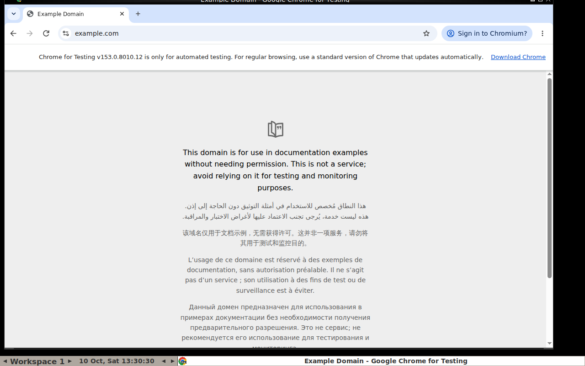
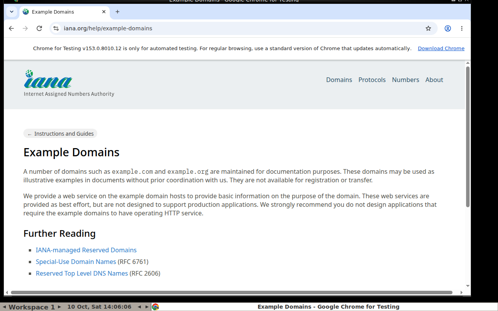

Hook · the agent's own mistake
Infrastructure limits the blast radius (isolation, rollback), not the prompt.
Don't take the agent's word for the state of the system.
Hook · attacks
Hidden HTML comment in a README → Cursor (Auto-Run) greps for keys, sends them with curl; denylist bypassed via $().
Without Auto-Run: read_file + create_diagram (Mermaid image) exfiltrates an SSH key. Fixed in Cursor 1.3.
314 payloads, 70 MITRE ATT&CK techniques in rule files; Cursor and Copilot. Attack success 41–84%. Terminal disabled? The agent writes os.system() into code (88%).
Not prompt injection, same lesson: CVE-2025-65099 (Claude Code < 1.0.39, CVSS 7.7: Yarn code ran before the folder-trust dialog) · CVE-2025-62222 (VS Code Copilot Chat, command injection, CVSS 8.8)
Threat model
Threat model
All three in one agent → data theft is one injected instruction away.
keys on disk · README comment · curl / Mermaid image URL
Beyond security
Template / image → the same environment for every run, eval and RL rollout
Hundreds of ephemeral environments, best-of-N, state forking. Daytona fork/pause: VM class only ✅ · E2B fork "20 copies" ❓ unverified
A remote machine per task: repo, tests, a PR as output
The agent needs a screen (Xvfb/VNC), a browser, mouse and keyboard
Watch live and take over via noVNC or a stream URL
CPU, RAM and time caps per environment
Beyond security · a pattern to steal
OpenAI Codex Cloud: one container per task ✅
Codex CLI: network off by default; network_proxy with a domain allowlist. The untrusted-content phase has neither secrets nor an exit.
Isolation
WASM / V8 isolates: runtime sandbox, ms start, not "full Linux"
Isolation · rungs 1–2
Hardening we use in ex2's Docker fallback:
docker run -d --rm --network none --read-only --tmpfs /tmp --user 65534:65534 \ --memory 512m --cpus 1 --pids-limit 128 python:3.12-slim sleep 600
Isolation · rungs 3–4
Firecracker under: E2B · Vercel Sandbox · Fly.io · AWS Lambda (+ AWS Lambda MicroVMs)
❓ gVisor and Kata descriptions are generic, not re-checked against primary docs in this pass.
Isolation · rung 5 and the side branch
Maximum compatibility, Windows, GUI · slow start, expensive
Wasmtime, Pyodide; Cloudflare Dynamic Workers · ms start, cheap · limited languages and syscalls, no full Linux
Rule of thumb
Remote desktops

Remote desktops
ex4 tools: click type key scroll screenshot wait done
DESKTOP_BACKEND=docker (ex3) or e2b (E2B Desktop)Remote desktops
Watch and take over via noVNC or a stream URL. E2B Desktop: stream.start() / get_url()
Browserbase (+ Stagehand), Steel (Apache-2.0, self-host), Hyperbrowser · ~$0.08–0.12 per browser-hour ⚠️ vendor · CDP from Playwright, live view
Anthropic computer_toolset_20260801 ✅: GA, no beta header, 17 member tools, batched actions. Claude 5.5 accepts only the toolset. OpenAI: computer use in the Responses API.
Native tools return structured actions in a model-specific schema; ex4 uses generic function tools so any vision + tool-calling model fits.
Landscape · list prices, verified 2026-10-10
| Platform | Isolation | CPU / RAM, billing | Desktop | Self-host |
|---|---|---|---|---|
| E2B | Firecracker microVM | $0.0504/vCPU-h · $0.0162/GiB-h · wall-clock | Yes (E2B Desktop) | e2b-dev/runtime, Apache-2.0 |
| Daytona | containers (Sysbox) + VM class | $0.0504/vCPU-h · $0.0162/GiB-h | VM/Windows ⚠️ | OSS archived June 2026 |
| Modal | gVisor; VM Sandboxes GA 2026-10-01 | ≈$0.071/vCPU-h · $0.024/GiB-h | own image ⚠️ | No |
| Cloudflare | microVM per container + V8 isolates | $0.072/vCPU-h active · $0.009/GiB-h | No | No |
| Vercel | Firecracker microVM | $0.128/CPU-h active · $0.0212/GB-h | No | No |
| Fly.io Sprites | Firecracker | $0.0385/CPU-h consumed · $0.021875/GB-h | own image | No |
⚠️ vendor-only Runloop: microVM devboxes, $0.108/CPU-h · Morph Cloud: Infinibranch snapshots, $0.05/MCU-h
Landscape
E2B, Daytona, Modal: you pay while it exists
Vercel, Cloudflare (RAM provisioned) · Fly.io Sprites (consumed; idle ~30 s → storage only)
Agents mostly wait for the LLM → usage billing usually fits. Session caps: E2B Hobby ≤ 1 h, Vercel Hobby 45 min.
| Cold start ⚠️ | Vendor | Independent* |
|---|---|---|
| E2B | ~150 ms | 0.7–1.6 s |
| Daytona | "90 ms" | 0.27 s burst, low success |
| Vercel | — | 0.67–1.9 s |
| Modal | — | 0.9–2.4 s |
* MarkTechPost benchmark, 2026-08-27, not re-checked. Firecracker < 125 ms ✅ is the VMM boot, not the product.
E2B code 1.30 s · local Docker 1.16 s
E2B Desktop 5.98 s · our ex3 desktop 7.22 s
Landscape
How to choose
1 · Start with trust
2 · Then add requirements
| Computer use | E2B Desktop, Daytona VM, Modal VM, own Docker + noVNC |
| Only a browser | Browserbase / Steel |
| Waits on LLM | usage billing: Vercel, Cloudflare, Fly Sprites |
| GPU | Modal or Daytona GPU |
| Fork / branch | E2B, Morph, Daytona (VM class) |
| Self-host | E2B runtime or DIY |
Live demo
LLM tool loop: run_python → throwaway Docker sandboxnvidia/nemotron-3-super-120b-a12b:free
Screenshot → vision LLM → action on our ex3 desktop, watched in noVNCdots-studio/dots-3-note-preview:free
OPENROUTER_API_KEY); E2B is the cloud alternative backendLive demo 1
$ SANDBOX_BACKEND=docker python workshop/ex2_llm_loop/agent.py \
"30th Fibonacci number and the sum of primes below 10000"
python:3.12-slim, one container per session--network none, read-only rootfsrun_python callCaveat: that image has no numpy/scipy → the default statistics task needs E2B or a custom image (DOCKER_SANDBOX_IMAGE).
Live demo 2
$ DESKTOP_BACKEND=docker python workshop/ex4_computer_use/agent.py "Open https://example.com and tell me the page title and first sentence" # watch: localhost:6080/vnc.html

dots-3-note-preview:free, 2026-10-10: title + first sentence ✅ 4 steps, 17–21 s · click the link, report the URL ✅ 24 steps, ~6 min
Live demo · lessons
| Model (OpenRouter, :free) | What happened | |
|---|---|---|
dots-studio/dots-3-note-preview | ✅ | reliable tool calls, weak clicking → default |
nvidia/nemotron-3-nano-omni-30b-a3b-reasoning | ❌ | 0..1 coords as strings (now handled), then "ResourceExhausted", then <tool_call> as plain text |
google/gemma-4-31b-it, gemma-4-26b-a4b-it | 429 | rate-limited all session: untested, keep as fallback |
thinkingmachines/inkling | 403 | free tier only for approved agentic harnesses |
EX4_FALLBACK_MODELS, keep tasks simple, keep screenshots. Pixel-precise clicking is the gap vendor computer-use models close.Production
Wrap-up